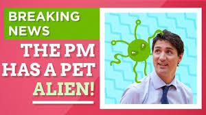

What is Fake News
Fake news can either be news that is deliberately published to get people to believe something that is not true or news that has some truth to it but does not tell the whole story. The first type of fake news are deliberate lies that are put online, even though the person writing them knows that they are made up. The second type of fake news may happen because the people writing it don't check all of the facts before publishing the story and they might exaggerate some of it. Also, a story might be called fake news when it isn't by people, who don't want to accept that the news is true, this can be another form of fake news.
One main reason is that it can make people believe things that are completely untrue. In addition, it can make people have less trust in the media, as well as make everyone believe something that might be inaccurate. Finally, people also only tend to share things that they agree with. So if people are sharing a lot of fake news, and lots of people believe it, it's easy to get sucked into a bubble that is actually completely different to the real world and a long way from the truth. In addition, calling something fake news, when it isn't really, is a problem as it can mean some people don't know what to believe anymore.
Main Points from the Video:
- Fake news are lies told for a political or commercial purpose which uses digital technologies to be promoted such as social medias.
- Some News Stories are genuinly wrong and they are misleading in someways but are not considered to be Fake News.
- Some News stories are called Fake News on purpose when they are actually real News and they are called Fake News to take pressure of the people the News is about.
Game

Which of these images looks like there fake and which one looks real?